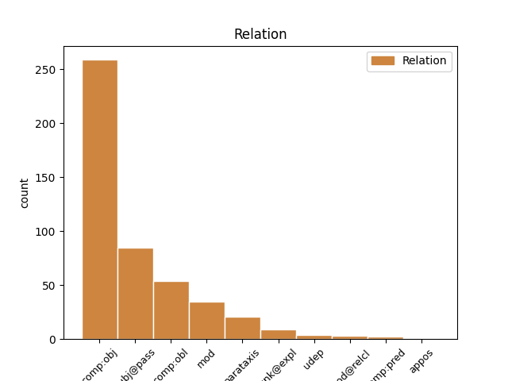
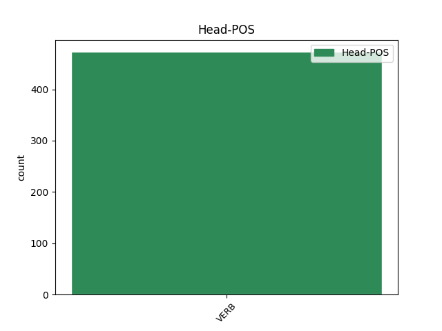
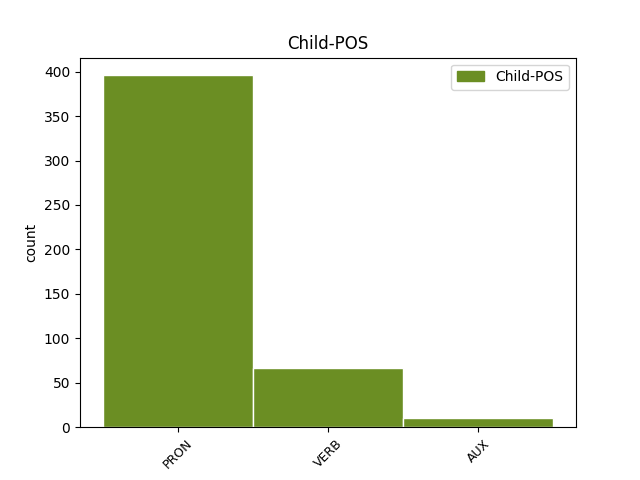

Distribution of features within this leaf



Agreement Rules sorted by frequency.
- When the dependent token is the direct object complements(comp:obj) of the head token, and the head token is VERB and the dependent token is PRON.
1 Αυτό _ _ _ _ 0 _ _ _
2 μπορεί _ _ _ _ 0 _ _ _
3 να _ _ _ _ 0 _ _ _
4 μην _ _ _ _ 0 _ _ _
5 οδηγήσει _ _ _ _ 0 _ _ _
6 σ _ _ _ _ 0 _ _ _
7 τη _ _ _ _ 0 _ _ _
8 λήξη _ _ _ _ 0 _ _ _
9 του _ _ _ _ 0 _ _ _
10 εν _ _ _ _ 0 _ _ _
11 λόγω _ _ _ _ 0 _ _ _
12 ζητήματος _ _ _ _ 0 _ _ _
13 αλλά _ _ _ _ 0 _ _ _
14 , _ _ _ _ 0 _ _ _
15 σ _ _ _ _ 0 _ _ _
16 τη _ _ _ _ 0 _ _ _
17 μορφή _ _ _ _ 0 _ _ _
18 υπό _ _ _ _ 0 _ _ _
19 την _ _ _ _ 0 _ _ _
20 οποία _ _ _ _ 0 _ _ _
21 την _ _ _ _ 0 _ _ _
22 λάβαμε _ _ _ _ 0 _ _ _
23 , _ _ _ _ 0 _ _ _
24 αυτή _ _ _ _ 0 _ _ _
25 η _ _ _ _ 0 _ _ _
26 αίτηση _ _ _ _ 0 _ _ _
27 άρσης _ _ _ _ 0 _ _ _
28 της _ _ _ _ 0 _ _ _
29 ασυλίας _ _ _ _ 0 _ _ _
30 ήταν _ _ _ _ 0 _ _ _
31 , _ _ _ _ 0 _ _ _
32 κατά _ _ _ _ 0 _ _ _
33 την _ _ _ _ 0 _ _ _
34 άποψη _ _ _ _ 0 _ _ _
35 της _ _ _ _ 0 _ _ _
36 Επιτροπής _ _ _ _ 0 _ _ _
37 Νομικών _ _ _ _ 0 _ _ _
38 Θεμάτων _ _ _ _ 0 _ _ _
39 , _ _ _ _ 0 _ _ _
40 απαράδεκτη _ _ _ _ 0 _ _ _
41 , _ _ _ _ 0 _ _ _
42 άποψη _ _ _ _ 0 _ _ _
43 την _ _ _ _ 0 _ _ _
44 οποία οποίος PRON PRON Case=Acc|Gender=Fem|Number=Sing|Person=3|PronType=Rel 50 comp:obj _ _
45 συνιστώ _ _ _ _ 0 _ _ _
46 σ _ _ _ _ 0 _ _ _
47 το _ _ _ _ 0 _ _ _
48 Σώμα _ _ _ _ 0 _ _ _
49 να _ _ _ _ 0 _ _ _
50 υιοθετήσει υιοθετώ VERB VERB Aspect=Perf|Mood=Ind|Number=Sing|Person=3|VerbForm=Fin|Voice=Act 0 _ _ _
51 . _ _ _ _ 0 _ _ _
1 από _ _ _ _ 0 _ _ _
2 τα _ _ _ _ 0 _ _ _
3 δε _ _ _ _ 0 _ _ _
4 έγγραφα _ _ _ _ 0 _ _ _
5 της _ _ _ _ 0 _ _ _
6 υπόθεσης _ _ _ _ 0 _ _ _
7 προκύπτει _ _ _ _ 0 _ _ _
8 ότι _ _ _ _ 0 _ _ _
9 δεν _ _ _ _ 0 _ _ _
10 φαίνεται _ _ _ _ 0 _ _ _
11 να _ _ _ _ 0 _ _ _
12 έχει _ _ _ _ 0 _ _ _
13 ληφθεί _ _ _ _ 0 _ _ _
14 υπόψη _ _ _ _ 0 _ _ _
15 η _ _ _ _ 0 _ _ _
16 σύσταση _ _ _ _ 0 _ _ _
17 να _ _ _ _ 0 _ _ _
18 διαβιβαστεί _ _ _ _ 0 _ _ _
19 η _ _ _ _ 0 _ _ _
20 αίτηση _ _ _ _ 0 _ _ _
21 άρσης _ _ _ _ 0 _ _ _
22 της _ _ _ _ 0 _ _ _
23 ασυλίας _ _ _ _ 0 _ _ _
24 μόνον _ _ _ _ 0 _ _ _
25 επί _ _ _ _ 0 _ _ _
26 τη _ _ _ _ 0 _ _ _
27 βάσει _ _ _ _ 0 _ _ _
28 ακριβέστερου _ _ _ _ 0 _ _ _
29 προσδιορισμού _ _ _ _ 0 _ _ _
30 όσον _ _ _ _ 0 _ _ _
31 αφορά _ _ _ _ 0 _ _ _
32 τους _ _ _ _ 0 _ _ _
33 τόπους _ _ _ _ 0 _ _ _
34 και _ _ _ _ 0 _ _ _
35 τα _ _ _ _ 0 _ _ _
36 πρόσωπα _ _ _ _ 0 _ _ _
37 που που PRON PRON Case=Nom|Gender=Neut|Number=Plur|Person=3|PronType=Rel 38 subj@pass _ _
38 εμπλέκονται εμπλέκω VERB VERB Aspect=Imp|Mood=Ind|Number=Plur|Person=3|Tense=Pres|VerbForm=Fin|Voice=Pass 0 _ _ _
39 σ _ _ _ _ 0 _ _ _
40 την _ _ _ _ 0 _ _ _
41 υπόθεση _ _ _ _ 0 _ _ _
42 . _ _ _ _ 0 _ _ _
1 Με _ _ _ _ 0 _ _ _
2 αυτές _ _ _ _ 0 _ _ _
3 τις _ _ _ _ 0 _ _ _
4 κατηγορίες _ _ _ _ 0 _ _ _
5 , _ _ _ _ 0 _ _ _
6 από _ _ _ _ 0 _ _ _
7 τις _ _ _ _ 0 _ _ _
8 οποίες _ _ _ _ 0 _ _ _
9 η _ _ _ _ 0 _ _ _
10 πρώτη _ _ _ _ 0 _ _ _
11 αφορά _ _ _ _ 0 _ _ _
12 λαθρεμπόριο _ _ _ _ 0 _ _ _
13 όπλων _ _ _ _ 0 _ _ _
14 κλπ. _ _ _ _ 0 _ _ _
15 , _ _ _ _ 0 _ _ _
16 και _ _ _ _ 0 _ _ _
17 βαρύνει _ _ _ _ 0 _ _ _
18 τόσο _ _ _ _ 0 _ _ _
19 τον _ _ _ _ 0 _ _ _
20 κ. _ _ _ _ 0 _ _ _
21 Pasqua _ _ _ _ 0 _ _ _
22 όσο _ _ _ _ 0 _ _ _
23 και _ _ _ _ 0 _ _ _
24 τον _ _ _ _ 0 _ _ _
25 κ. _ _ _ _ 0 _ _ _
26 Marchiani _ _ _ _ 0 _ _ _
27 , _ _ _ _ 0 _ _ _
28 ενώ _ _ _ _ 0 _ _ _
29 η _ _ _ _ 0 _ _ _
30 δεύτερη _ _ _ _ 0 _ _ _
31 στρέφεται _ _ _ _ 0 _ _ _
32 μόνον _ _ _ _ 0 _ _ _
33 εναντίον _ _ _ _ 0 _ _ _
34 του _ _ _ _ 0 _ _ _
35 κ. _ _ _ _ 0 _ _ _
36 Pasqua _ _ _ _ 0 _ _ _
37 , _ _ _ _ 0 _ _ _
38 οι _ _ _ _ 0 _ _ _
39 ανακριτές _ _ _ _ 0 _ _ _
40 δικαστές _ _ _ _ 0 _ _ _
41 ζητούν _ _ _ _ 0 _ _ _
42 την _ _ _ _ 0 _ _ _
43 άρση _ _ _ _ 0 _ _ _
44 της _ _ _ _ 0 _ _ _
45 βουλευτικής _ _ _ _ 0 _ _ _
46 ασυλίας _ _ _ _ 0 _ _ _
47 των _ _ _ _ 0 _ _ _
48 εν _ _ _ _ 0 _ _ _
49 λόγω _ _ _ _ 0 _ _ _
50 δύο _ _ _ _ 0 _ _ _
51 κυρίων _ _ _ _ 0 _ _ _
52 , _ _ _ _ 0 _ _ _
53 προκειμένου _ _ _ _ 0 _ _ _
54 να _ _ _ _ 0 _ _ _
55 τους _ _ _ _ 0 _ _ _
56 επιβληθούν _ _ _ _ 0 _ _ _
57 ορισμένα _ _ _ _ 0 _ _ _
58 μέτρα _ _ _ _ 0 _ _ _
59 δικαστικής _ _ _ _ 0 _ _ _
60 επιτήρησης _ _ _ _ 0 _ _ _
61 : _ _ _ _ 0 _ _ _
62 να _ _ _ _ 0 _ _ _
63 τους _ _ _ _ 0 _ _ _
64 απαγορευθεί _ _ _ _ 0 _ _ _
65 η _ _ _ _ 0 _ _ _
66 επαφή _ _ _ _ 0 _ _ _
67 με _ _ _ _ 0 _ _ _
68 διάφορους _ _ _ _ 0 _ _ _
69 μάρτυρες _ _ _ _ 0 _ _ _
70 ή _ _ _ _ 0 _ _ _
71 συγκατηγορουμένους _ _ _ _ 0 _ _ _
72 σ _ _ _ _ 0 _ _ _
73 τις _ _ _ _ 0 _ _ _
74 υποθέσεις _ _ _ _ 0 _ _ _
75 αυτές _ _ _ _ 0 _ _ _
76 και _ _ _ _ 0 _ _ _
77 η _ _ _ _ 0 _ _ _
78 μετάβαση _ _ _ _ 0 _ _ _
79 σε _ _ _ _ 0 _ _ _
80 διάφορες _ _ _ _ 0 _ _ _
81 χώρες _ _ _ _ 0 _ _ _
82 , _ _ _ _ 0 _ _ _
83 καθώς _ _ _ _ 0 _ _ _
84 και _ _ _ _ 0 _ _ _
85 να _ _ _ _ 0 _ _ _
86 τους εγώ PRON PRON Case=Gen|Gender=Masc|Number=Plur|Person=3|PronType=Prs 87 comp:obl _ _
87 επιβληθεί επιβάλλω VERB VERB Aspect=Perf|Mood=Ind|Number=Sing|Person=3|VerbForm=Fin|Voice=Pass 0 _ _ _
88 ενδεχομένως _ _ _ _ 0 _ _ _
89 η _ _ _ _ 0 _ _ _
90 καταβολή _ _ _ _ 0 _ _ _
91 εγγύησης _ _ _ _ 0 _ _ _
92 . _ _ _ _ 0 _ _ _
1 Το _ _ _ _ 0 _ _ _
2 άρθρο _ _ _ _ 0 _ _ _
3 9 _ _ _ _ 0 _ _ _
4 του _ _ _ _ 0 _ _ _
5 Πρωτοκόλλου _ _ _ _ 0 _ _ _
6 , _ _ _ _ 0 _ _ _
7 όπως _ _ _ _ 0 _ _ _
8 επεσήμανε επισημαίνω VERB VERB Aspect=Perf|Mood=Ind|Number=Sing|Person=3|Tense=Past|VerbForm=Fin|Voice=Act 19 mod _ _
9 με _ _ _ _ 0 _ _ _
10 αυστηρότητα _ _ _ _ 0 _ _ _
11 η _ _ _ _ 0 _ _ _
12 Πρόεδρος _ _ _ _ 0 _ _ _
13 Fontaine _ _ _ _ 0 _ _ _
14 σ _ _ _ _ 0 _ _ _
15 τον _ _ _ _ 0 _ _ _
16 Εισαγγελέα _ _ _ _ 0 _ _ _
17 , _ _ _ _ 0 _ _ _
18 μας _ _ _ _ 0 _ _ _
19 απαλλάσσει απαλλάσσω VERB VERB Aspect=Imp|Mood=Ind|Number=Sing|Person=3|Tense=Pres|VerbForm=Fin|Voice=Act 0 _ _ _
20 τελείως _ _ _ _ 0 _ _ _
21 από _ _ _ _ 0 _ _ _
22 οποιαδήποτε _ _ _ _ 0 _ _ _
23 νομική _ _ _ _ 0 _ _ _
24 διαδικασία _ _ _ _ 0 _ _ _
25 σε _ _ _ _ 0 _ _ _
26 σχέση _ _ _ _ 0 _ _ _
27 με _ _ _ _ 0 _ _ _
28 την _ _ _ _ 0 _ _ _
29 έκφραση _ _ _ _ 0 _ _ _
30 γνώμης _ _ _ _ 0 _ _ _
31 ή _ _ _ _ 0 _ _ _
32 ψήφου _ _ _ _ 0 _ _ _
33 κατά _ _ _ _ 0 _ _ _
34 την _ _ _ _ 0 _ _ _
35 άσκηση _ _ _ _ 0 _ _ _
36 των _ _ _ _ 0 _ _ _
37 καθηκόντων _ _ _ _ 0 _ _ _
38 μας _ _ _ _ 0 _ _ _
39 ως _ _ _ _ 0 _ _ _
40 μέλη _ _ _ _ 0 _ _ _
41 αυτού _ _ _ _ 0 _ _ _
42 του _ _ _ _ 0 _ _ _
43 Κοινοβουλίου _ _ _ _ 0 _ _ _
44 . _ _ _ _ 0 _ _ _
1 Η _ _ _ _ 0 _ _ _
2 Αστυνομία _ _ _ _ 0 _ _ _
3 απέκλεισε αποκλείω VERB VERB Aspect=Perf|Mood=Ind|Number=Sing|Person=3|Tense=Past|VerbForm=Fin|Voice=Act 0 _ _ _
4 την _ _ _ _ 0 _ _ _
5 πόλη _ _ _ _ 0 _ _ _
6 με _ _ _ _ 0 _ _ _
7 σκοπό _ _ _ _ 0 _ _ _
8 να _ _ _ _ 0 _ _ _
9 βρεί _ _ _ _ 0 _ _ _
10 τους _ _ _ _ 0 _ _ _
11 κρατούμενους _ _ _ _ 0 _ _ _
12 και _ _ _ _ 0 _ _ _
13 να _ _ _ _ 0 _ _ _
14 τους _ _ _ _ 0 _ _ _
15 ξαναβάλει _ _ _ _ 0 _ _ _
16 σ _ _ _ _ 0 _ _ _
17 τη _ _ _ _ 0 _ _ _
18 φυλακή _ _ _ _ 0 _ _ _
19 » _ _ _ _ 0 _ _ _
20 , _ _ _ _ 0 _ _ _
21 δήλωσε δηλώνω VERB VERB Aspect=Perf|Mood=Ind|Number=Sing|Person=3|Tense=Past|VerbForm=Fin|Voice=Act 3 parataxis _ _
22 εκπρόσωπος _ _ _ _ 0 _ _ _
23 των _ _ _ _ 0 _ _ _
24 τοπικών _ _ _ _ 0 _ _ _
25 αρχών _ _ _ _ 0 _ _ _
26 . _ _ _ _ 0 _ _ _
1 Για _ _ _ _ 0 _ _ _
2 τον _ _ _ _ 0 _ _ _
3 λόγο _ _ _ _ 0 _ _ _
4 αυτό _ _ _ _ 0 _ _ _
5 , _ _ _ _ 0 _ _ _
6 κύριε _ _ _ _ 0 _ _ _
7 Ύπατε _ _ _ _ 0 _ _ _
8 Εκπρόσωπε _ _ _ _ 0 _ _ _
9 , _ _ _ _ 0 _ _ _
10 να _ _ _ _ 0 _ _ _
11 σκεφτούμε σκέφτομαι VERB VERB Aspect=Perf|Mood=Ind|Number=Plur|Person=1|VerbForm=Fin|Voice=Pass 0 _ _ _
12 και _ _ _ _ 0 _ _ _
13 μαζί _ _ _ _ 0 _ _ _
14 με _ _ _ _ 0 _ _ _
15 μας _ _ _ _ 0 _ _ _
16 θα _ _ _ _ 0 _ _ _
17 πρέπει _ _ _ _ 0 _ _ _
18 να _ _ _ _ 0 _ _ _
19 σκεφτεί _ _ _ _ 0 _ _ _
20 και _ _ _ _ 0 _ _ _
21 η _ _ _ _ 0 _ _ _
22 Επιτροπή _ _ _ _ 0 _ _ _
23 κατά _ _ _ _ 0 _ _ _
24 πόσο _ _ _ _ 0 _ _ _
25 μπορούμε μπορώ VERB VERB Aspect=Imp|Mood=Ind|Number=Plur|Person=1|Tense=Pres|VerbForm=Fin|Voice=Act 11 comp:obj _ _
26 να _ _ _ _ 0 _ _ _
27 χρησιμοποιήσουμε _ _ _ _ 0 _ _ _
28 τα _ _ _ _ 0 _ _ _
29 μέσα _ _ _ _ 0 _ _ _
30 που _ _ _ _ 0 _ _ _
31 διαθέτουμε _ _ _ _ 0 _ _ _
32 μέσω _ _ _ _ 0 _ _ _
33 της _ _ _ _ 0 _ _ _
34 συμφωνίας _ _ _ _ 0 _ _ _
35 σύνδεσης _ _ _ _ 0 _ _ _
36 με _ _ _ _ 0 _ _ _
37 το _ _ _ _ 0 _ _ _
38 Ισραήλ _ _ _ _ 0 _ _ _
39 , _ _ _ _ 0 _ _ _
40 φτάνοντας _ _ _ _ 0 _ _ _
41 ακόμα _ _ _ _ 0 _ _ _
42 και _ _ _ _ 0 _ _ _
43 σ _ _ _ _ 0 _ _ _
44 την _ _ _ _ 0 _ _ _
45 αναστολή _ _ _ _ 0 _ _ _
46 της _ _ _ _ 0 _ _ _
47 εν _ _ _ _ 0 _ _ _
48 λόγω _ _ _ _ 0 _ _ _
49 συμφωνίας _ _ _ _ 0 _ _ _
50 . _ _ _ _ 0 _ _ _
1 Ο _ _ _ _ 0 _ _ _
2 Μπαράκ _ _ _ _ 0 _ _ _
3 Ομπάμα _ _ _ _ 0 _ _ _
4 ανέφερε _ _ _ _ 0 _ _ _
5 ότι _ _ _ _ 0 _ _ _
6 « _ _ _ _ 0 _ _ _
7 ήδη _ _ _ _ 0 _ _ _
8 υπάρχουν _ _ _ _ 0 _ _ _
9 πολλές _ _ _ _ 0 _ _ _
10 αναφορές _ _ _ _ 0 _ _ _
11 για _ _ _ _ 0 _ _ _
12 πόλεμο _ _ _ _ 0 _ _ _
13 με _ _ _ _ 0 _ _ _
14 το _ _ _ _ 0 _ _ _
15 Ιράν _ _ _ _ 0 _ _ _
16 » _ _ _ _ 0 _ _ _
17 και _ _ _ _ 0 _ _ _
18 επεσήμανε επισημαίνω VERB VERB Aspect=Perf|Mood=Ind|Number=Sing|Person=3|Tense=Past|VerbForm=Fin|Voice=Act 0 _ _ _
19 τέτοιες _ _ _ _ 0 _ _ _
20 συζητήσεις _ _ _ _ 0 _ _ _
21 « _ _ _ _ 0 _ _ _
22 είναι είμαι AUX AUX Aspect=Imp|Mood=Ind|Number=Sing|Person=3|Tense=Pres|VerbForm=Fin|Voice=Pass 18 comp:obj _ _
23 προς _ _ _ _ 0 _ _ _
24 όφελος _ _ _ _ 0 _ _ _
25 της _ _ _ _ 0 _ _ _
26 Τεχεράνης _ _ _ _ 0 _ _ _
27 γιατί _ _ _ _ 0 _ _ _
28 αυξάνουν _ _ _ _ 0 _ _ _
29 τις _ _ _ _ 0 _ _ _
30 τιμές _ _ _ _ 0 _ _ _
31 του _ _ _ _ 0 _ _ _
32 πετρελαίου _ _ _ _ 0 _ _ _
33 , _ _ _ _ 0 _ _ _
34 σ _ _ _ _ 0 _ _ _
35 το _ _ _ _ 0 _ _ _
36 οποίο _ _ _ _ 0 _ _ _
37 βασίζεται _ _ _ _ 0 _ _ _
38 η _ _ _ _ 0 _ _ _
39 Ιρανική _ _ _ _ 0 _ _ _
40 Κυβέρνηση _ _ _ _ 0 _ _ _
41 για _ _ _ _ 0 _ _ _
42 την _ _ _ _ 0 _ _ _
43 χρηματοδότηση _ _ _ _ 0 _ _ _
44 του _ _ _ _ 0 _ _ _
45 πυρηνικού _ _ _ _ 0 _ _ _
46 της _ _ _ _ 0 _ _ _
47 προγράμματος _ _ _ _ 0 _ _ _
48 » _ _ _ _ 0 _ _ _
49 . _ _ _ _ 0 _ _ _
1 Τέθηκε _ _ _ _ 0 _ _ _
2 επικεφαλής _ _ _ _ 0 _ _ _
3 επανάστασης _ _ _ _ 0 _ _ _
4 ( _ _ _ _ 0 _ _ _
5 με _ _ _ _ 0 _ _ _
6 το _ _ _ _ 0 _ _ _
7 κίνημα _ _ _ _ 0 _ _ _
8 Εθνικής _ _ _ _ 0 _ _ _
9 Άμυνας _ _ _ _ 0 _ _ _
10 ) _ _ _ _ 0 _ _ _
11 με _ _ _ _ 0 _ _ _
12 έδρα _ _ _ _ 0 _ _ _
13 τη _ _ _ _ 0 _ _ _
14 Θεσσαλονίκη _ _ _ _ 0 _ _ _
15 , _ _ _ _ 0 _ _ _
16 σ _ _ _ _ 0 _ _ _
17 την _ _ _ _ 0 _ _ _
18 οποία _ _ _ _ 0 _ _ _
19 πήγε _ _ _ _ 0 _ _ _
20 και _ _ _ _ 0 _ _ _
21 σχημάτισε _ _ _ _ 0 _ _ _
22 επαναστατική _ _ _ _ 0 _ _ _
23 " _ _ _ _ 0 _ _ _
24 Προσωρινή _ _ _ _ 0 _ _ _
25 Κυβέρνηση _ _ _ _ 0 _ _ _
26 Εθνικής _ _ _ _ 0 _ _ _
27 Άμυνας _ _ _ _ 0 _ _ _
28 " _ _ _ _ 0 _ _ _
29 μαζί _ _ _ _ 0 _ _ _
30 με _ _ _ _ 0 _ _ _
31 τους _ _ _ _ 0 _ _ _
32 ναύαρχο _ _ _ _ 0 _ _ _
33 Παύλο _ _ _ _ 0 _ _ _
34 Κουντουριώτη _ _ _ _ 0 _ _ _
35 και _ _ _ _ 0 _ _ _
36 στρατηγό _ _ _ _ 0 _ _ _
37 Παναγιώτη _ _ _ _ 0 _ _ _
38 Δαγκλή _ _ _ _ 0 _ _ _
39 χρησιμοποιώντας _ _ _ _ 0 _ _ _
40 την _ _ _ _ 0 _ _ _
41 Κρητική _ _ _ _ 0 _ _ _
42 Χωροφυλακή _ _ _ _ 0 _ _ _
43 αφού _ _ _ _ 0 _ _ _
44 προηγουμένως _ _ _ _ 0 _ _ _
45 , _ _ _ _ 0 _ _ _
46 σ _ _ _ _ 0 _ _ _
47 τις _ _ _ _ 0 _ _ _
48 25_Σεπτεμβρίου _ _ _ _ 0 _ _ _
49 , _ _ _ _ 0 _ _ _
50 πέρασε _ _ _ _ 0 _ _ _
51 από _ _ _ _ 0 _ _ _
52 την _ _ _ _ 0 _ _ _
53 Κρήτη _ _ _ _ 0 _ _ _
54 , _ _ _ _ 0 _ _ _
55 η _ _ _ _ 0 _ _ _
56 οποία _ _ _ _ 0 _ _ _
57 προσχώρησε προσχωρώ VERB VERB Aspect=Perf|Mood=Ind|Number=Sing|Person=3|Tense=Past|VerbForm=Fin|Voice=Act 0 _ _ _
58 κι _ _ _ _ 0 _ _ _
59 αυτή αυτός PRON PRON Case=Nom|Gender=Fem|Number=Sing|Person=3|PronType=Dem 57 udep _ _
60 σ _ _ _ _ 0 _ _ _
61 την _ _ _ _ 0 _ _ _
62 επανάσταση _ _ _ _ 0 _ _ _
63 . _ _ _ _ 0 _ _ _
1 Οι _ _ _ _ 0 _ _ _
2 Τούρκοι _ _ _ _ 0 _ _ _
3 πρότειναν _ _ _ _ 0 _ _ _
4 να _ _ _ _ 0 _ _ _
5 γίνει _ _ _ _ 0 _ _ _
6 ανταλλαγή _ _ _ _ 0 _ _ _
7 της _ _ _ _ 0 _ _ _
8 Κρήτης _ _ _ _ 0 _ _ _
9 με _ _ _ _ 0 _ _ _
10 τη _ _ _ _ 0 _ _ _
11 Θεσσαλία _ _ _ _ 0 _ _ _
12 που _ _ _ _ 0 _ _ _
13 την εγώ PRON PRON Case=Acc|Gender=Fem|Number=Sing|Person=3|PronType=Prs 14 unk@expl _ _
14 κατείχε κατέχω VERB VERB Aspect=Imp|Mood=Ind|Number=Sing|Person=3|Tense=Past|VerbForm=Fin|Voice=Act 0 _ _ _
15 ο _ _ _ _ 0 _ _ _
16 στρατός _ _ _ _ 0 _ _ _
17 τους _ _ _ _ 0 _ _ _
18 . _ _ _ _ 0 _ _ _
1 Πρότεινε προτείνω VERB VERB Aspect=Perf|Mood=Ind|Number=Sing|Person=3|Tense=Past|VerbForm=Fin|Voice=Act 0 _ _ _
2 να _ _ _ _ 0 _ _ _
3 επιτεθούν _ _ _ _ 0 _ _ _
4 μαζί _ _ _ _ 0 _ _ _
5 με _ _ _ _ 0 _ _ _
6 άλλους _ _ _ _ 0 _ _ _
7 επαναστάτες _ _ _ _ 0 _ _ _
8 που _ _ _ _ 0 _ _ _
9 ήταν _ _ _ _ 0 _ _ _
10 σ _ _ _ _ 0 _ _ _
11 το _ _ _ _ 0 _ _ _
12 Ακρωτήρι _ _ _ _ 0 _ _ _
13 , _ _ _ _ 0 _ _ _
14 σ _ _ _ _ 0 _ _ _
15 τους _ _ _ _ 0 _ _ _
16 Τούρκους _ _ _ _ 0 _ _ _
17 και _ _ _ _ 0 _ _ _
18 να _ _ _ _ 0 _ _ _
19 τους _ _ _ _ 0 _ _ _
20 εκτοπίσουν _ _ _ _ 0 _ _ _
21 από _ _ _ _ 0 _ _ _
22 την _ _ _ _ 0 _ _ _
23 πεδιάδα _ _ _ _ 0 _ _ _
24 ( _ _ _ _ 0 _ _ _
25 η _ _ _ _ 0 _ _ _
26 Μαλάξα _ _ _ _ 0 _ _ _
27 είναι είμαι AUX AUX Aspect=Imp|Mood=Ind|Number=Sing|Person=3|Tense=Pres|VerbForm=Fin|Voice=Pass 1 parataxis _ _
28 σε _ _ _ _ 0 _ _ _
29 κάποιο _ _ _ _ 0 _ _ _
30 υψόμετρο _ _ _ _ 0 _ _ _
31 ) _ _ _ _ 0 _ _ _
32 . _ _ _ _ 0 _ _ _
1 Κύριε _ _ _ _ 0 _ _ _
2 Πρόεδρε _ _ _ _ 0 _ _ _
3 , _ _ _ _ 0 _ _ _
4 οι _ _ _ _ 0 _ _ _
5 υπό _ _ _ _ 0 _ _ _
6 συζήτηση _ _ _ _ 0 _ _ _
7 υποθέσεις _ _ _ _ 0 _ _ _
8 αφορούν αφορώ VERB VERB Aspect=Imp|Mood=Ind|Number=Plur|Person=3|Tense=Pres|VerbForm=Fin|Voice=Act 0 _ _ _
9 πολύ _ _ _ _ 0 _ _ _
10 σοβαρές _ _ _ _ 0 _ _ _
11 κατηγορίες _ _ _ _ 0 _ _ _
12 , _ _ _ _ 0 _ _ _
13 οι _ _ _ _ 0 _ _ _
14 οποίες _ _ _ _ 0 _ _ _
15 βαρύνουν βαραίνω VERB VERB Aspect=Imp|Mood=Ind|Number=Plur|Person=3|Tense=Pres|VerbForm=Fin|Voice=Act 8 mod@relcl _ _
16 δύο _ _ _ _ 0 _ _ _
17 βουλευτές _ _ _ _ 0 _ _ _
18 του _ _ _ _ 0 _ _ _
19 Σώματος _ _ _ _ 0 _ _ _
20 και _ _ _ _ 0 _ _ _
21 αναφέρονται _ _ _ _ 0 _ _ _
22 σ _ _ _ _ 0 _ _ _
23 την _ _ _ _ 0 _ _ _
24 πρώτη _ _ _ _ 0 _ _ _
25 σελίδα _ _ _ _ 0 _ _ _
26 της _ _ _ _ 0 _ _ _
27 αιτιολογικής _ _ _ _ 0 _ _ _
28 έκθεσης _ _ _ _ 0 _ _ _
29 της _ _ _ _ 0 _ _ _
30 έκθεσής _ _ _ _ 0 _ _ _
31 μου _ _ _ _ 0 _ _ _
32 , _ _ _ _ 0 _ _ _
33 σ _ _ _ _ 0 _ _ _
34 την _ _ _ _ 0 _ _ _
35 οποία _ _ _ _ 0 _ _ _
36 συνιστώ _ _ _ _ 0 _ _ _
37 σ _ _ _ _ 0 _ _ _
38 τους _ _ _ _ 0 _ _ _
39 συναδέλφους _ _ _ _ 0 _ _ _
40 να _ _ _ _ 0 _ _ _
41 ρίξουν _ _ _ _ 0 _ _ _
42 μια _ _ _ _ 0 _ _ _
43 ματιά _ _ _ _ 0 _ _ _
44 . _ _ _ _ 0 _ _ _
1 Η _ _ _ _ 0 _ _ _
2 τεχνική _ _ _ _ 0 _ _ _
3 εμπειρογνωμοσύνη _ _ _ _ 0 _ _ _
4 , _ _ _ _ 0 _ _ _
5 η _ _ _ _ 0 _ _ _
6 εκπαίδευση _ _ _ _ 0 _ _ _
7 , _ _ _ _ 0 _ _ _
8 τα _ _ _ _ 0 _ _ _
9 εργαλεία _ _ _ _ 0 _ _ _
10 και _ _ _ _ 0 _ _ _
11 το _ _ _ _ 0 _ _ _
12 επίπεδο _ _ _ _ 0 _ _ _
13 των _ _ _ _ 0 _ _ _
14 υπηρεσιών _ _ _ _ 0 _ _ _
15 θα _ _ _ _ 0 _ _ _
16 παραμείνουν παραμένω VERB VERB Aspect=Perf|Mood=Ind|Number=Plur|Person=3|VerbForm=Fin|Voice=Act 0 _ _ _
17 αυτά αυτός PRON PRON Case=Nom|Gender=Neut|Number=Plur|Person=3|PronType=Dem 16 comp:pred _ _
18 που _ _ _ _ 0 _ _ _
19 αποφασίζει _ _ _ _ 0 _ _ _
20 ο _ _ _ _ 0 _ _ _
21 κατασκευαστής _ _ _ _ 0 _ _ _
22 και _ _ _ _ 0 _ _ _
23 εφαρμόζονται _ _ _ _ 0 _ _ _
24 σε _ _ _ _ 0 _ _ _
25 ολόκληρο _ _ _ _ 0 _ _ _
26 το _ _ _ _ 0 _ _ _
27 δίκτυό _ _ _ _ 0 _ _ _
28 του _ _ _ _ 0 _ _ _
29 . _ _ _ _ 0 _ _ _
1 Εξίσου _ _ _ _ 0 _ _ _
2 σημαντική _ _ _ _ 0 _ _ _
3 ήταν είμαι AUX AUX Aspect=Imp|Mood=Ind|Number=Sing|Person=3|Tense=Past|VerbForm=Fin|Voice=Pass 46 subj@pass _ _
4 η _ _ _ _ 0 _ _ _
5 πτώση _ _ _ _ 0 _ _ _
6 που _ _ _ _ 0 _ _ _
7 σημείωσαν _ _ _ _ 0 _ _ _
8 και _ _ _ _ 0 _ _ _
9 οι _ _ _ _ 0 _ _ _
10 ΗΠΑ _ _ _ _ 0 _ _ _
11 σ _ _ _ _ 0 _ _ _
12 την _ _ _ _ 0 _ _ _
13 ίδια _ _ _ _ 0 _ _ _
14 έκθεση _ _ _ _ 0 _ _ _
15 μετά _ _ _ _ 0 _ _ _
16 το _ _ _ _ 0 _ _ _
17 κυνήγι _ _ _ _ 0 _ _ _
18 σ _ _ _ _ 0 _ _ _
19 το _ _ _ _ 0 _ _ _
20 οποίο _ _ _ _ 0 _ _ _
21 έχει _ _ _ _ 0 _ _ _
22 επιδοθεί _ _ _ _ 0 _ _ _
23 η _ _ _ _ 0 _ _ _
24 αμερικανική _ _ _ _ 0 _ _ _
25 κυβέρνηση _ _ _ _ 0 _ _ _
26 προς _ _ _ _ 0 _ _ _
27 τους _ _ _ _ 0 _ _ _
28 υπεύθυνους _ _ _ _ 0 _ _ _
29 διαρροών _ _ _ _ 0 _ _ _
30 κρατικών _ _ _ _ 0 _ _ _
31 μυστικών _ _ _ _ 0 _ _ _
32 , _ _ _ _ 0 _ _ _
33 γεγονός _ _ _ _ 0 _ _ _
34 που _ _ _ _ 0 _ _ _
35 λειτουργεί _ _ _ _ 0 _ _ _
36 ως _ _ _ _ 0 _ _ _
37 " _ _ _ _ 0 _ _ _
38 προειδοποίηση _ _ _ _ 0 _ _ _
39 για _ _ _ _ 0 _ _ _
40 οποιονδήποτε _ _ _ _ 0 _ _ _
41 επιχειρήσει _ _ _ _ 0 _ _ _
42 αντίστοιχες _ _ _ _ 0 _ _ _
43 ενέργειες _ _ _ _ 0 _ _ _
44 " _ _ _ _ 0 _ _ _
45 , _ _ _ _ 0 _ _ _
46 αναφέρεται αναφέρω VERB VERB Aspect=Imp|Mood=Ind|Number=Sing|Person=3|Tense=Pres|VerbForm=Fin|Voice=Pass 0 _ _ _
47 σ _ _ _ _ 0 _ _ _
48 την _ _ _ _ 0 _ _ _
49 έκθεση _ _ _ _ 0 _ _ _
50 των _ _ _ _ 0 _ _ _
51 " _ _ _ _ 0 _ _ _
52 Δημοσιογράφων _ _ _ _ 0 _ _ _
53 Χωρίς _ _ _ _ 0 _ _ _
54 Σύνορα _ _ _ _ 0 _ _ _
55 " _ _ _ _ 0 _ _ _
56 . _ _ _ _ 0 _ _ _
1 Το _ _ _ _ 0 _ _ _
2 καθήκον _ _ _ _ 0 _ _ _
3 για _ _ _ _ 0 _ _ _
4 την _ _ _ _ 0 _ _ _
5 προστασία _ _ _ _ 0 _ _ _
6 της _ _ _ _ 0 _ _ _
7 πόλης _ _ _ _ 0 _ _ _
8 καθώς _ _ _ _ 0 _ _ _
9 και _ _ _ _ 0 _ _ _
10 για _ _ _ _ 0 _ _ _
11 την _ _ _ _ 0 _ _ _
12 τήρηση _ _ _ _ 0 _ _ _
13 των _ _ _ _ 0 _ _ _
14 νόμων _ _ _ _ 0 _ _ _
15 ανατέθηκε αναθέτω VERB VERB Aspect=Perf|Mood=Ind|Number=Sing|Person=3|Tense=Past|VerbForm=Fin|Voice=Pass 31 subj@pass _ _
16 σε _ _ _ _ 0 _ _ _
17 ένοπλες _ _ _ _ 0 _ _ _
18 ομάδες _ _ _ _ 0 _ _ _
19 που _ _ _ _ 0 _ _ _
20 συμμετείχαν _ _ _ _ 0 _ _ _
21 σ _ _ _ _ 0 _ _ _
22 τον _ _ _ _ 0 _ _ _
23 αγώνα _ _ _ _ 0 _ _ _
24 κατά _ _ _ _ 0 _ _ _
25 του _ _ _ _ 0 _ _ _
26 Μουαμάρ _ _ _ _ 0 _ _ _
27 αλ _ _ _ _ 0 _ _ _
28 Καντάφι _ _ _ _ 0 _ _ _
29 » _ _ _ _ 0 _ _ _
30 , _ _ _ _ 0 _ _ _
31 αναφέρεται αναφέρω VERB VERB Aspect=Imp|Mood=Ind|Number=Sing|Person=3|Tense=Pres|VerbForm=Fin|Voice=Pass 0 _ _ _
32 σ _ _ _ _ 0 _ _ _
33 την _ _ _ _ 0 _ _ _
34 δήλωση _ _ _ _ 0 _ _ _
35 . _ _ _ _ 0 _ _ _
Disagree Examples:
1 Κυρία _ _ _ _ 0 _ _ _
2 Πρόεδρε _ _ _ _ 0 _ _ _
3 , _ _ _ _ 0 _ _ _
4 καλωσορίζουμε _ _ _ _ 0 _ _ _
5 αυτή _ _ _ _ 0 _ _ _
6 την _ _ _ _ 0 _ _ _
7 πρωτοβουλία _ _ _ _ 0 _ _ _
8 ως _ _ _ _ 0 _ _ _
9 ένα _ _ _ _ 0 _ _ _
10 ακόμα _ _ _ _ 0 _ _ _
11 μικρό _ _ _ _ 0 _ _ _
12 βήμα _ _ _ _ 0 _ _ _
13 σ _ _ _ _ 0 _ _ _
14 την _ _ _ _ 0 _ _ _
15 πορεία _ _ _ _ 0 _ _ _
16 προς _ _ _ _ 0 _ _ _
17 την _ _ _ _ 0 _ _ _
18 εκπλήρωση _ _ _ _ 0 _ _ _
19 της _ _ _ _ 0 _ _ _
20 εντολής _ _ _ _ 0 _ _ _
21 που που PRON PRON Case=Acc|Gender=Fem|Number=Sing|Person=3|PronType=Rel 22 comp:obj _ _
22 λάβαμε λαμβάνω VERB VERB Aspect=Perf|Mood=Ind|Number=Plur|Person=1|Tense=Past|VerbForm=Fin|Voice=Act 0 _ _ _
23 σ _ _ _ _ 0 _ _ _
24 τη _ _ _ _ 0 _ _ _
25 Σύνοδο _ _ _ _ 0 _ _ _
26 του _ _ _ _ 0 _ _ _
27 Τάμπερε _ _ _ _ 0 _ _ _
28 να _ _ _ _ 0 _ _ _
29 καταστήσουμε _ _ _ _ 0 _ _ _
30 την _ _ _ _ 0 _ _ _
31 αρχή _ _ _ _ 0 _ _ _
32 της _ _ _ _ 0 _ _ _
33 αμοιβαίας _ _ _ _ 0 _ _ _
34 αναγνώρισης _ _ _ _ 0 _ _ _
35 ακρογωνιαίο _ _ _ _ 0 _ _ _
36 λίθο _ _ _ _ 0 _ _ _
37 της _ _ _ _ 0 _ _ _
38 δικαστικής _ _ _ _ 0 _ _ _
39 συνεργασίας _ _ _ _ 0 _ _ _
40 . _ _ _ _ 0 _ _ _
1 Η _ _ _ _ 0 _ _ _
2 άλλη _ _ _ _ 0 _ _ _
3 διεθνής _ _ _ _ 0 _ _ _
4 σύμβαση _ _ _ _ 0 _ _ _
5 - _ _ _ _ 0 _ _ _
6 η _ _ _ _ 0 _ _ _
7 Σύμβαση _ _ _ _ 0 _ _ _
8 του _ _ _ _ 0 _ _ _
9 1970 _ _ _ _ 0 _ _ _
10 - _ _ _ _ 0 _ _ _
11 περιλαμβάνει _ _ _ _ 0 _ _ _
12 13 _ _ _ _ 0 _ _ _
13 αιτίες _ _ _ _ 0 _ _ _
14 για _ _ _ _ 0 _ _ _
15 τις _ _ _ _ 0 _ _ _
16 οποίες _ _ _ _ 0 _ _ _
17 μια _ _ _ _ 0 _ _ _
18 αίτηση _ _ _ _ 0 _ _ _
19 μπορεί _ _ _ _ 0 _ _ _
20 να _ _ _ _ 0 _ _ _
21 απορριφθεί _ _ _ _ 0 _ _ _
22 , _ _ _ _ 0 _ _ _
23 κι _ _ _ _ 0 _ _ _
24 έτσι _ _ _ _ 0 _ _ _
25 μπορούμε _ _ _ _ 0 _ _ _
26 να _ _ _ _ 0 _ _ _
27 καταλάβουμε καταλαβαίνω VERB VERB Aspect=Perf|Mood=Ind|Number=Plur|Person=1|VerbForm=Fin|Voice=Act 0 _ _ _
28 γιατί _ _ _ _ 0 _ _ _
29 το _ _ _ _ 0 _ _ _
30 σύστημα _ _ _ _ 0 _ _ _
31 δεν _ _ _ _ 0 _ _ _
32 λειτουργεί λειτουργώ VERB VERB Aspect=Imp|Mood=Ind|Number=Sing|Person=3|Tense=Pres|VerbForm=Fin|Voice=Act 27 comp:obj _ _
33 αυτή _ _ _ _ 0 _ _ _
34 τη _ _ _ _ 0 _ _ _
35 στιγμή _ _ _ _ 0 _ _ _
36 . _ _ _ _ 0 _ _ _
1 οι _ _ _ _ 0 _ _ _
2 άνθρωποι _ _ _ _ 0 _ _ _
3 που _ _ _ _ 0 _ _ _
4 ενδιαφέρονται ενδιαφέρω VERB VERB Aspect=Imp|Mood=Ind|Number=Plur|Person=3|Tense=Pres|VerbForm=Fin|Voice=Pass 0 _ _ _
5 για _ _ _ _ 0 _ _ _
6 τις _ _ _ _ 0 _ _ _
7 ατομικές _ _ _ _ 0 _ _ _
8 ελευθερίες _ _ _ _ 0 _ _ _
9 - _ _ _ _ 0 _ _ _
10 και _ _ _ _ 0 _ _ _
11 εντάσσω εντάσσω VERB VERB Aspect=Imp|Mood=Ind|Number=Sing|Person=1|Tense=Pres|VerbForm=Fin|Voice=Act 4 parataxis _ _
12 και _ _ _ _ 0 _ _ _
13 τον _ _ _ _ 0 _ _ _
14 εαυτό _ _ _ _ 0 _ _ _
15 μου _ _ _ _ 0 _ _ _
16 σε _ _ _ _ 0 _ _ _
17 αυτούς _ _ _ _ 0 _ _ _
18 - _ _ _ _ 0 _ _ _
19 αναγκάστηκαν _ _ _ _ 0 _ _ _
20 να _ _ _ _ 0 _ _ _
21 συμφωνήσουν _ _ _ _ 0 _ _ _
22 σ _ _ _ _ 0 _ _ _
23 τα _ _ _ _ 0 _ _ _
24 μέτρα _ _ _ _ 0 _ _ _
25 της _ _ _ _ 0 _ _ _
26 αμοιβαίας _ _ _ _ 0 _ _ _
27 αναγνώρισης _ _ _ _ 0 _ _ _
28 , _ _ _ _ 0 _ _ _
29 χωρίς _ _ _ _ 0 _ _ _
30 να _ _ _ _ 0 _ _ _
31 έχουν _ _ _ _ 0 _ _ _
32 σ _ _ _ _ 0 _ _ _
33 τη _ _ _ _ 0 _ _ _
34 διάθεσή _ _ _ _ 0 _ _ _
35 τους _ _ _ _ 0 _ _ _
36 ένα _ _ _ _ 0 _ _ _
37 πλήρες _ _ _ _ 0 _ _ _
38 πρόγραμμα _ _ _ _ 0 _ _ _
39 που _ _ _ _ 0 _ _ _
40 θα _ _ _ _ 0 _ _ _
41 διασφάλιζε _ _ _ _ 0 _ _ _
42 ενδεχομένως _ _ _ _ 0 _ _ _
43 ακόμα _ _ _ _ 0 _ _ _
44 περισσότερο _ _ _ _ 0 _ _ _
45 την _ _ _ _ 0 _ _ _
46 τήρηση _ _ _ _ 0 _ _ _
47 των _ _ _ _ 0 _ _ _
48 ατομικών _ _ _ _ 0 _ _ _
49 δικαιωμάτων _ _ _ _ 0 _ _ _
50 . _ _ _ _ 0 _ _ _
1 Με εγώ PRON PRON Case=Acc|Gender=Masc|Number=Sing|Person=1|PronType=Prs 2 comp:obj _ _
2 κατηγόρησαν κατηγορώ VERB VERB Aspect=Perf|Mood=Ind|Number=Plur|Person=3|Tense=Past|VerbForm=Fin|Voice=Act 0 _ _ _
3 ότι _ _ _ _ 0 _ _ _
4 συμφώνησα _ _ _ _ 0 _ _ _
5 όσον _ _ _ _ 0 _ _ _
6 αφορά _ _ _ _ 0 _ _ _
7 σ _ _ _ _ 0 _ _ _
8 το _ _ _ _ 0 _ _ _
9 ευρωπαϊκό _ _ _ _ 0 _ _ _
10 ένταλμα _ _ _ _ 0 _ _ _
11 συλλήψεως _ _ _ _ 0 _ _ _
12 , _ _ _ _ 0 _ _ _
13 τη _ _ _ _ 0 _ _ _
14 στιγμή _ _ _ _ 0 _ _ _
15 που _ _ _ _ 0 _ _ _
16 υποστηρίζω _ _ _ _ 0 _ _ _
17 σθεναρά _ _ _ _ 0 _ _ _
18 τα _ _ _ _ 0 _ _ _
19 ατομικά _ _ _ _ 0 _ _ _
20 δικαιώματα _ _ _ _ 0 _ _ _
21 . _ _ _ _ 0 _ _ _
1 Με _ _ _ _ 0 _ _ _
2 κατηγόρησαν _ _ _ _ 0 _ _ _
3 ότι _ _ _ _ 0 _ _ _
4 συμφώνησα συμφωνώ VERB VERB Aspect=Perf|Mood=Ind|Number=Sing|Person=1|Tense=Past|VerbForm=Fin|Voice=Act 0 _ _ _
5 όσον _ _ _ _ 0 _ _ _
6 αφορά αφορώ VERB VERB Aspect=Imp|Mood=Ind|Number=Sing|Person=3|Tense=Pres|VerbForm=Fin|Voice=Act 4 mod _ _
7 σ _ _ _ _ 0 _ _ _
8 το _ _ _ _ 0 _ _ _
9 ευρωπαϊκό _ _ _ _ 0 _ _ _
10 ένταλμα _ _ _ _ 0 _ _ _
11 συλλήψεως _ _ _ _ 0 _ _ _
12 , _ _ _ _ 0 _ _ _
13 τη _ _ _ _ 0 _ _ _
14 στιγμή _ _ _ _ 0 _ _ _
15 που _ _ _ _ 0 _ _ _
16 υποστηρίζω _ _ _ _ 0 _ _ _
17 σθεναρά _ _ _ _ 0 _ _ _
18 τα _ _ _ _ 0 _ _ _
19 ατομικά _ _ _ _ 0 _ _ _
20 δικαιώματα _ _ _ _ 0 _ _ _
21 . _ _ _ _ 0 _ _ _